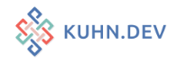
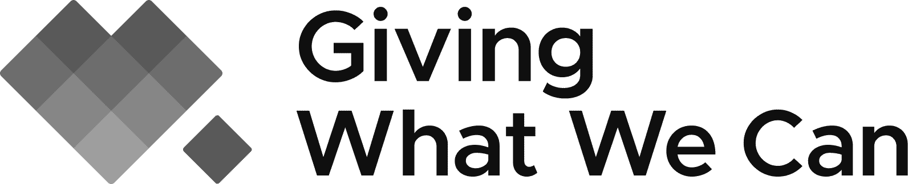
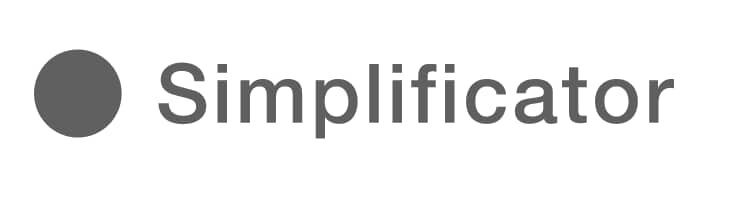

About me

Hi, I'm Fabio, a software developer and technical leader with over 20 years of experience across startups, agencies, and large enterprises. My strengths are in full-stack web development (Ruby on Rails, Next.js, PostgreSQL), system architecture, IT security, and technical leadership.
I have a proven track record in building and growing engineering teams, migrating and modernizing legacy systems, and reliably maintaining business-critical platforms. Experienced in collaborating with international, remote teams.
Services
Software Development
Custom application development in both new and legacy projects. Experienced in the full stack of a web application – from databases to backend to frontend – or any part of them.
System Design
A crucial part of your product development process is figuring out the optimal system design. Defining the architecture, modules, interfaces, and data for a system to satisfy your specific requirements.
Consulting
You are starting a new project and lack certain skills or can you use support in an existing team?
Software Development, Deployment and Operations
Transform your development into a continuous success of delivering high quality. Writing maintainable code, balance velocity with risks and ensure high uptime.
Development methodologies and team setup
Key part of creating valuable outcomes is to optimize your processes around the product development. Ensuring involvement of key stakeholders and identifying constraints to figure out clear structures and reasonable processes.
Product planning
What objectives to prioritize and how to reach key metric goals? I can help you figure out the path from your vision to an understandable strategy that leads to concrete actions.
Hiring
Grow your business and hire the right people by getting a second opinion on a candidate.
Coaching
You’ve learned the craft but still feel a bit unsure of the practice? Or maybe you hired a new programmer and want him to get started on the right foot? I’ll help you get up to speed with virtual or in-person pair programming and async code reviews.
My skillset
It's hard to list all the skills and things I do or did over the past years. I selected some of the more important and interesting skills and tools for which I have professional experiences with.
Languages & Frameworks: Ruby on Rails, JavaScript, Node.js, React, Next.js, GraphQL
Databases: PostgreSQL, MySQL, Redis
DevOps & Cloud: Heroku, AWS (RDS, S3, CloudFront), CI/CD, Docker
Frontend: HTML, CSS (SCSS, TailwindCSS), StimulusJS, Responsive Design
IT Security: System architecture, security best practices, data governance, infrastructure planning
Project Management: Shape Up, Scrum, Kanban, OKR planning, roadmap development
Leadership: Remote team management, recruiting, coaching, team building


My work experience

Key Achievements
- Built Giving Multiplier from the ground up as a solo developer, in collaboration with Prof. Joshua Greene (Harvard) and Prof. Lucius Caviola (Cambridge)
- Processed over 15,000 donations with a total volume of $6.2M, of which $4.1M went to highly effective charities
- Additional client: EA Funds (technical support and development of the grantmaking platform)

Key Achievements
- Built engineering team from 1 to 3; supported org growth from 4 to 16 staff with very high team retention
- Led full technical separation of infrastructure from parent org (Effective Ventures) — completed without service interruptions
- Migrated and consolidated legacy donation platform into a simplified, maintainable architecture (Next.js, GraphQL, PostgreSQL)
- Implemented tipping feature: 300% increase in processed donation volume
- Built pledge club system with 100+ new pledges including dashboard infrastructure
- Reduced financial reconciliation from six weeks to weekly cycles
- Redesigned entire web presence; supported doubling of community members
Key Achievements
- Sole developer from project start until August 2018; then built and led a team of 6 (4 engineers, 2 frontend designers)
- Built complete trading platform: from the first order (half container, 4 orders, 2015) to hundreds of containers between Latin America, Africa, Asia and Europe
- Full-stack development with Ruby on Rails and JavaScript; co-shaped product strategy and technical roadmap
- Evaluated, built and maintained the technology stack over the entire product lifecycle

Key Achievements
- Engineering with Ruby on Rails, RubyMotion and JavaScript for diverse clients (startups, Swisscom/local.ch, myclimate)
- Project specification, on-site technical consulting and quality assurance
Contact
Interested in having a conversation?
Send me an email tofabio@kuhn.dev
or check my LinkedIn Profile